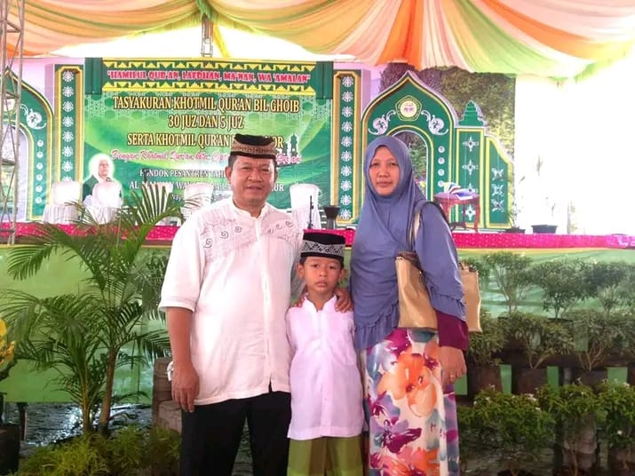

28 Agustus 2026
Selamat Ulang Tahun ke-58, Mamah
“Untuk perempuan hebat yang selalu menjadi rumah bagi keluarga.”
Di hari istimewa ini, ada begitu banyak hal yang ingin disampaikan. Terima kasih untuk setiap kasih sayang, doa, kesabaran, dan pengorbanan yang telah Mamah berikan. Hari ini dunia merayakan hari ketika perempuan terhebat kami dilahirkan.

Surat dari anak
Untuk Mamah
Selamat ulang tahun ke-58, Mamah.
Terima kasih karena selalu menjadi tempat ternyaman untuk pulang, tempat untuk bercerita, dan seseorang yang tidak pernah lelah mendoakan keluarga.
Terima kasih untuk semua perjuangan, kesabaran, dan kasih sayang yang mungkin tidak selalu bisa kami balas dengan kata-kata.
Semoga di usia 58 tahun ini Mamah selalu diberikan kesehatan, umur panjang, ketenangan, kebahagiaan, dan hari-hari yang dipenuhi hal-hal baik.
Semoga Mamah selalu tersenyum dan selalu dikelilingi orang-orang yang menyayangi Mamah.
Terima kasih untuk semuanya.
Dengan penuh cinta, Anak-anakmu